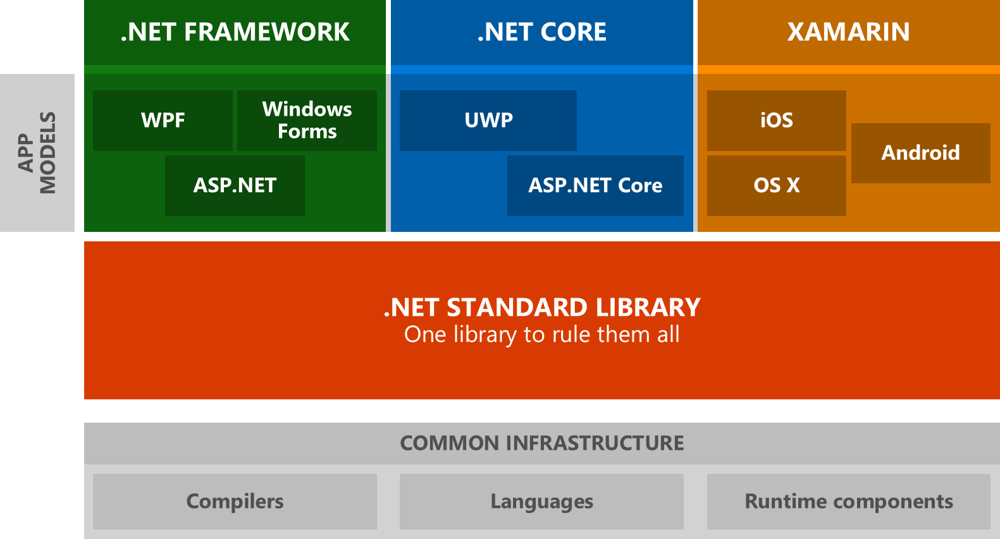

.NET Standard explained
Slides: http://marcinjuraszek.com/presentations/net-standard/

Marcin Juraszek
Senior Software Engineer @ Microsoft
- http://marcinjuraszek.com
- @mmjuraszek on Twitter
- MarcinJuraszek on GitHub
.NET ecosystem

.NET ecosystem with .NET Standard
.NET Standard
A specification, not a platform.
You can target it, never run on it.
Analogy
https://gist.github.com/davidfowl/8939f305567e1755412d6dc0b8baf1b7
interface INetStandard15 : INetStandard14
{
void AssemblyLoadContext();
}interface IXamarinIOS : INetStandard15
{
void AppleAPIs();
}
interface INetFramework462 : INetFramework461, INetStandard15
{
// (...)
}
interface INetCoreApp10 : INetStandard15
{
}Demo
.NET Standard libraries
Versions
Additive and Immutable
Granularity:
- Assemblies
- Types
- Type Members
2.0
1.3
1.2
1.1
1.0
Which version should I target?
The higher the version,
the more APIs are available to you.
The lower the version,
the more platforms you can run on.
| .NET Standard | 1.0 | 1.1 | 1.2 | 1.3 | 1.4 | 1.5 | 1.6 | 2.0 |
|---|---|---|---|---|---|---|---|---|
| .NET Core | 1.0 | 1.0 | 1.0 | 1.0 | 1.0 | 1.0 | 1.0 | 2.0 |
| .NET Framework (with tooling 1.0) | 4.5 | 4.5 | 4.5.1 | 4.6 | 4.6.1 | 4.6.2 | ||
| .NET Framework (with tooling 2.0 preview) | 4.5 | 4.5 | 4.5.1 | 4.6 | 4.6.1 | 4.6.1 | 4.6.1 | 4.6.1 |
| Mono | 4.6 | 4.6 | 4.6 | 4.6 | 4.6 | 4.6 | 4.6 | vNext |
| Xamarin.iOS | 10.0 | 10.0 | 10.0 | 10.0 | 10.0 | 10.0 | 10.0 | vNext |
| Xamarin.Android | 7.0 | 7.0 | 7.0 | 7.0 | 7.0 | 7.0 | 7.0 | vNext |
| Universal Windows Platform | 10.0 | 10.0 | 10.0 | 10.0 | 10.0 | vNext | vNext | vNext |
| Windows | 8.0 | 8.0 | 8.1 | |||||
| Windows Phone | 8.1 | 8.1 | 8.1 | |||||
| Windows Phone Silverlight | 8.0 |
Where can I use given .NET Standard library?
| .NET Standard | 1.0 | 1.1 | 1.2 | 1.3 | 1.4 | 1.5 | 1.6 | 2.0 |
|---|---|---|---|---|---|---|---|---|
| .NET Core | 1.0 | 1.0 | 1.0 | 1.0 | 1.0 | 1.0 | 1.0 | 2.0 |
| .NET Framework (with tooling 1.0) | 4.5 | 4.5 | 4.5.1 | 4.6 | 4.6.1 | 4.6.2 | ||
| .NET Framework (with tooling 2.0 preview) | 4.5 | 4.5 | 4.5.1 | 4.6 | 4.6.1 | 4.6.1 | 4.6.1 | 4.6.1 |
| Mono | 4.6 | 4.6 | 4.6 | 4.6 | 4.6 | 4.6 | 4.6 | vNext |
| Xamarin.iOS | 10.0 | 10.0 | 10.0 | 10.0 | 10.0 | 10.0 | 10.0 | vNext |
| Xamarin.Android | 7.0 | 7.0 | 7.0 | 7.0 | 7.0 | 7.0 | 7.0 | vNext |
| Universal Windows Platform | 10.0 | 10.0 | 10.0 | 10.0 | 10.0 | vNext | vNext | vNext |
| Windows | 8.0 | 8.0 | 8.1 | |||||
| Windows Phone | 8.1 | 8.1 | 8.1 | |||||
| Windows Phone Silverlight | 8.0 |
What version of .NET Standard can I target based on where I want to use it?
| .NET Standard | 1.0 | 1.1 | 1.2 | 1.3 | 1.4 | 1.5 | 1.6 | 2.0 |
|---|---|---|---|---|---|---|---|---|
| .NET Core | 1.0 | 1.0 | 1.0 | 1.0 | 1.0 | 1.0 | 1.0 | 2.0 |
| .NET Framework (with tooling 1.0) | 4.5 | 4.5 | 4.5.1 | 4.6 | 4.6.1 | 4.6.2 | ||
| .NET Framework (with tooling 2.0 preview) | 4.5 | 4.5 | 4.5.1 | 4.6 | 4.6.1 | 4.6.1 | 4.6.1 | 4.6.1 |
| Mono | 4.6 | 4.6 | 4.6 | 4.6 | 4.6 | 4.6 | 4.6 | vNext |
| Xamarin.iOS | 10.0 | 10.0 | 10.0 | 10.0 | 10.0 | 10.0 | 10.0 | vNext |
| Xamarin.Android | 7.0 | 7.0 | 7.0 | 7.0 | 7.0 | 7.0 | 7.0 | vNext |
| Universal Windows Platform | 10.0 | 10.0 | 10.0 | 10.0 | 10.0 | vNext | vNext | vNext |
| Windows | 8.0 | 8.0 | 8.1 | |||||
| Windows Phone | 8.1 | 8.1 | 8.1 | |||||
| Windows Phone Silverlight | 8.0 |
Which version should I target?
Target the lowest version you can
How do I know which version to choose
when porting an existing library?
.NET Portability Analyzer
https://github.com/Microsoft/dotnet-apiport
Is Foo.Bar() part of
.NET Standard Y.Z?
Demo
Versions
| .NET Standard | 1.0 | 1.1 | 1.2 | 1.3 | 1.4 | 1.5 | 1.6 | 2.0 |
|---|---|---|---|---|---|---|---|---|
| .NET Core | 1.0 | 1.0 | 1.0 | 1.0 | 1.0 | 1.0 | 1.0 | 2.0 |
| .NET Framework (with tooling 1.0) | 4.5 | 4.5 | 4.5.1 | 4.6 | 4.6.1 | 4.6.2 | ||
| .NET Framework (with tooling 2.0 preview) | 4.5 | 4.5 | 4.5.1 | 4.6 | 4.6.1 | 4.6.1 | 4.6.1 | 4.6.1 |
| Mono | 4.6 | 4.6 | 4.6 | 4.6 | 4.6 | 4.6 | 4.6 | vNext |
| Xamarin.iOS | 10.0 | 10.0 | 10.0 | 10.0 | 10.0 | 10.0 | 10.0 | vNext |
| Xamarin.Android | 7.0 | 7.0 | 7.0 | 7.0 | 7.0 | 7.0 | 7.0 | vNext |
| Universal Windows Platform | 10.0 | 10.0 | 10.0 | 10.0 | 10.0 | vNext | vNext | vNext |
| Windows | 8.0 | 8.0 | 8.1 | |||||
| Windows Phone | 8.1 | 8.1 | 8.1 | |||||
| Windows Phone Silverlight | 8.0 |
.NET Standard
vs.
Portable Class Library
Profiles
.NET 4.0
.NET Core 4.5
Silverlight 5.0
14
5
37
source: https://commons.wikimedia.org/wiki/File:Symmetrical_5-set_Venn_diagram.svg
| PCL Profile | .NET Standard | PCL Platforms |
|---|---|---|
| 7 | 1.1 | .NET Framework 4.5, Windows 8 |
| 31 | 1.0 | Windows 8.1, Windows Phone Silverlight 8.1 |
| 32 | 1.2 | Windows 8.1, Windows Phone 8.1 |
| 44 | 1.2 | .NET Framework 4.5.1, Windows 8.1 |
| 49 | 1.0 | .NET Framework 4.5, Windows Phone Silverlight 8 |
| 78 | 1.0 | .NET Framework 4.5, Windows 8, Windows Phone Silverlight 8 |
| 84 | 1.0 | Windows Phone 8.1, Windows Phone Silverlight 8.1 |
| 111 | 1.1 | .NET Framework 4.5, Windows 8, Windows Phone 8.1 |
| 151 | 1.2 | .NET Framework 4.5.1, Windows 8.1, Windows Phone 8.1 |
| 157 | 1.0 | Windows 8.1, Windows Phone 8.1, Windows Phone Silverlight 8.1 |
| 259 | 1.0 | .NET Framework 4.5, Windows 8, Windows Phone 8.1, Windows Phone Silverlight 8 |
.NET Standard 2.0
pre-2.0 problems
- Number of APIs.
- Level of adoption.
Number of APIs
| Version | #APIs | Growth % |
|---|---|---|
| 1.0 | 7,949 | |
| 1.1 | 10,239 | +29% |
| 1.2 | 10,285 | +0% |
| 1.3 | 13,122 | +28% |
| 1.4 | 13,140 | +0% |
| 1.5 | 13,355 | +2% |
| 1.6 | 13,501 | +1% |
| 2.0 | 32,638 | +142% |
Level of adoption
| Target | Occurrences |
|---|---|
| .NET Framework | 46,894 |
| .NET Standard | 1,886 |
| Portable | 4,501 |
https://blogs.msdn.microsoft.com/dotnet/2016/09/26/introducing-net-standard/
Solution
Compatibility shim & Type Forwarding

.NET Core SDK 2.0 preview 2
https://blogs.msdn.microsoft.com/dotnet/2017/06/28/announcing-net-core-2-0-preview-2/Demo
.NET Standard 2.0
Type Forwarding
Internals
Release schedule
| Milestone | Release Date |
|---|---|
| .NET Core 2.0 Preview 1 | Released on 2017/5/10, see announcement |
| .NET Standard 2.0 Preview 1 | Released on 2017/5/10, see announcement |
| .NET Core 2.0 Preview 2 | Released on 2017/6/28, see announcement |
| .NET Core 2.0 | Q3 2017, see also latest build |
| .NET Standard 2.0 | Q3 2017 |
| UWP 6.0 (implements .NET Standard 2.0) | Q4 2017 (Win10 Fall Creators Update) |
| .NET Core 2.1 | Q4 2017 (after UWP 6.0) |
Resources
https://github.com/dotnet/standardThanks!
Slides: http://marcinjuraszek.com/presentations/net-standard/
Demos: https://github.com/MarcinJuraszek/presentations